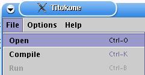
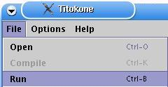

- Menus
- Code window
- Status
- Display
- Keyboard input
- Symbol table
- Registers
- Comments
Titokone is an assembler simulator, which is intended to show how symbolic assembly language is executed in a simple processor.
|
|
|
First part is about installing the Titokone. If you've already done that, then you can move directly to the Titokone functions.

|
2.1 Getting and installing Java |
Titokone is a TTK-91 machine language simulator written in Java. To run Titokone, you need a Java virtual machine (minimum version 1.4.2) installed. You can download an implementation of the Java virtual machine at http://java.sun.com. Follow their installation instructions.
It may be slightly difficult to find what you want at Sun's Java pages. To install just the virtual machine, look for "JRE", to install the development environment as well for making your own Java programs or for creating new translations for Titokone, look for "SDK". At the time of writing this, J2SE version 1.4.2, both SDK and JRE (the 2 is the platform number, version number is different) could be downloaded from http://java.sun.com/j2se/1.4.2/download.html.
Note that on the University of Helsinki, CS department, Java SDK 1.4.2 or newer has been installed already, so you only need to install Java if you want to use Titokone at eg. your home machine.
|
|
2.2 Getting Titokone |
You can get Titokone via the Tietokoneen toiminta (Computer Organization) course homepage, currently at http://www.cs.helsinki.fi/teemu.kerola/tito/. You can choose between downloading the JAR package containing Titokone(titokone.jar) directly or downloading a ZIP file which contains the JAR file itself along with some instructions and helper programs.
|
|
2.3 Installing Titokone |
For those who know how to manage JAR packages directly, fetching titokone.jar is sufficient. (JAR is a package format; if you have an up-to-date version of WinZip, you should be able to open them; in Linux, use the command 'jar' - see below.) No installation is required; you can run the jar file directly. For example, in Windows you must execute the command
java.exe -jar titokone.jarin the directory where you stored the titokone.jar package. In Linux, you must execute the command
java -jar titokone.jar
to run the program. You must have Java installed and on your execution path.
Download titokone.zip and unpack it to the target directory of your choosing. (The package creates a subdirectory called 'titokone'.) To run Titokone, go to the subdirectory and double-click on the titokone BAT (MS-DOS Batch) file. You can tell titokone.bat apart from the titokone.jar file by its icon; titokone.jar usually looks like something yellow in a screw bench, titokone.bat resembles a cog wheel inside a window frame. Titokone.sh, a script which starts the program in Linux, is probably an unknown filetype in Windows.
If BAT files have stopped working in Windows MEGAMILLIONSUPER (we have tested them up to Windows XP), you can probably still somehow run the command 'java.exe -jar C:\my\path\to\titokone\titokone.jar' via the Start menu. Replace C:\my\path\to\titokone with the actual path to the file.
Download titokone.zip and unpack it (eg. gunzip titokone.zip) to the target directory of your choosing. (The package creates a subdirectory called 'titokone'.) To run Titokone, open a terminal, change to the directory the zip file opened, and then the 'titokone' subdirectory, and run
java -jar titokone.jar
If typing is tiresome, the zip contains a titokone.sh startup script for your convenience. You can rename the file to something shorter, like tk. Then you just need to run ./tk (or ./titokone.sh if you have not renamed it). The script does not change directories, so you must either keep it in the same directory as titokone.jar or edit it.
If you wish, you can open the jar by running the following command:
in Windows: It is probably easiest to open the file using WinZip or
something similar.
in Linux: jar -xvf titokone.jar
The jar package contains the source code and class files, among other things. If you modify the files, eg. to add a new language file (see the included manual on how to do this), you should note that the class files are a part of a Java package (three packages, to be exact).
To start the modified program, change to the package root directory (where the 'fi' subdirectory is located) and run the command:
in Windows: java.exe fi.hu.cs.titokone.Titokone in Linux: java fi.hu.cs.titokone.Titokone
Javadoc of the classes is included in javadoc/. To compile files (needed for eg. adding new language support), you need Java SDK, JRE is not sufficient.

|
3.1 Opening a TTK-91 program |
|  Open from the menu."> |
Opening a new file is done by pressing the Open toolbutton or by choosing File --> Open from the menu. You will then see a file dialog. New file can be also opened using the shortcut key CTRL+O. |

|
The file dialog shows the files in the currently chosen directory, according to the chosen type. The file types to show are determined according to their file extensions: k91 stands for a source file, b91 for a binary file.
|
|
|
3.2 Editing the source code |
The source code can be edited in Titokone as follows:
Either

or

We recommend editing the source code in a separate program,
however. There have been problems with the result getting stored in
some other, recently opened k91 file. See our
troubleshooting section on this.

|
3.3 Compiling a TTK-91 program |

|
Compilation happens in two phases in Titokone: first a syntax check is done and the symbol table is created. On the second round, the object code is formed. Compilation is started by clicking on the Compile button or by choosing File --> Compile from the menu. Compilation is done according to the compilation settings, either stopping every time a comment appears or all through without pauses. Compiling can be started also using shortcut key CTRL-K. |

|
Continue a step onwards: the compilation progressing a row at a time can be continued by pressing this button or the enter key after each step, which advances until the next event occurs. |

|
Continue to the end: The compilation can be run through without pauses. This will not change the row-wise compilation setting, it only overrides it for this compilation. |

|
Stop: The compilation can be aborted by pressing the stop button. The view will remain as it was until the Continue button is also pressed. |
Compilation event types refer to the compiler's reactions to the contents of the source code. A line is commented and/or stopped on according to the compiling options.
First round:
Second round:
Finishing the compilation:
|
|
3.4 Compiling options |

|
The compiling options cam be changed by choosing Options --> Set compiling options from the menu. |

|
The compiling options affect how the compilation behaves and how it is commented.
|
|
|
3.5 Loading a TTK-91 program |
A TTK-91 program is loaded automatically when
3.6 Running a TTK-91 program |
|  run" alt="An illustration on how to select File --> Run from the menu"> | After compiling a k91 file or opening a b91 file, the program is loaded into memory and is ready for running. In the running view, the code window is divided in two, the code and data area. You should note that in reality, the memory of the Titokone is one large area; dividing it to two parts visually is a usability choice. To start running the program, press the Run toolbutton or choose File --> Run from the menu. The running will follow according to the running options, either pausing or running all the way through, with or without animation. Running can be also started using the shortcut key CTRL-B. |
|
|
Continue a step onwards: if the run is progressing a row at a time, it can be continued by pressing the Continue button or the enter key after each step, which advances to the next row (command). |
|
|
Continue to the end: The run can be finished without pauses. This will not affect the row-wise running setting, it only overrides it for this run. |
|
|
Stop: the run can be aborted by pressing the stop button. The view will remain as it was until the Continue button is also pressed. |
|
|
3.7 Running options |

|
The running options can be modified by selecting Options --> Set running options from the menu. |

|
The running options are almost the same as the compiling options; an option to animate the command is added.
|
You can also change the running options directly from toolbuttons:

|
Turning the line by line execution on or off. |

|
Turning the extra comments on or off. |

|
Turning the animation window show on or off. |
|
|
3.8 Animation |

|
|
|
|
3.9 Selecting the STDIN and STDOUT files |

|
|
|
|
3.10 Erasing the memory |

|
The titokone memory can be emptied by selecting File --> Erase memory from the menu. Besides erasing the memory, it can in practice be used to empty the source code view. If the memory is emptied during compilation or running, the action will be aborted and the opening view, with registers, symbol table and code view have been emptied. Memory can be erased using the shortcut key CTRL-E. Unless the memory is erased or its size is changed, the remnants of old programs can be seen in the memory. The symbolic representations of those lines are hidden for clarity. If a program does not store something in a register or a memory slot before reading from there, the result may well be something different from 0. |
|
|
3.11 Changing the memory size |

|
You can change the Titokone memory size by selecting Options --> Set memory size from the menu. There are 8 different memory sizes, from 512 to 65536 rows. When the new memory size is set, the code view is emptied and the and the opening view is shown. For a memory size larger than 32768 lines, the end lines have addresses larger than the constant part of a command can hold (its maximum value is 32768). This means that the lines cannot be referenced directly from a single line of code, but you can use other methods, like the following bit addressing 32768+500 illustrates: LOAD R1, =32768 ; Load the maximum constant into a register LOAD R2, 500(R1) ; Load the contents of the line 32768+500 to R2. You can also give the value in an EQU or a DC, as they have a higher maximum value. The registers are all 32-bit, like the memory slots, even if the constant (or address) part of a command only fits 16 bits. |
|
|
3.12 Changing the user interface language |

|
You can change the language settings from the Titokone user interface. Select the language from the menu Options --> Set language. The languages included by default are Finnish and English. You can change the language on the run, nearly independent of other things going on in the user interface. If the user has defined her own language file, she can either choose it from the list or locate it in a separate file. Languages correctly added to the language settings file are shown in the 'Set language' menu. You can choose another language file by clicking on 'Select from a file...'. If the language file is of the correct form, the language is immediately changed. If a certain text's translation equivalent is missing from the language file, the default language (English) is used at its stead. For more information on adding a new language, see Adding support for a new language |
+--------------------------------------------------------------------+ | Operation code ¦ Rj ¦ M ¦ Ri ¦ address part ADDR | | 8 bits ¦ 3 ¦ 2 ¦ 3 ¦ 16 bits | +--------------------------------------------------------------------+ 31 24 23 16 15 0
In the symbolic machine language, the commands are of the form
LABEL OPER Rj,M ADDR(Ri)
where OPER the symbolic name of the command
Rj the first operand (register R0..R7)
M addressing mode:
= immediate operand
direct addressing (empty, ie. not marked)
@ indirect addressing
ADDR address part (memory address or constant value)
Ri possible index register (register R0..R7)
If some part of a command has no meaning, it can be left out. It is possible to add a label (symbolic address) in front of a command. The label should consist of the letters A-Ö, 0-9 and _, and contain at least one non-numerical character. Only the first 8 characters are considered.
Almost all commands have the following forms available:
OPER Rj,ADDR direct memory addressing OPER Rj,=ADDR immediate operand OPER Rj,@ADDR indirect memory addressing OPER Rj,ADDR(Ri) indexed addressing OPER Rj,=ADDR(Ri) indexed immediate operand OPER Rj,@ADDR(Ri) indexed indirect memory addressing OPER Rj,Ri direct register addressing
There are exceptions:
STORE The latter operand is always the target address;
it cannot be a register or a constant value.
POP The latter operand must always be a register.
JUMP COMMANDS The latter operand is always the target address;
it cannot be a constant. In the jump commands which
look at the state register, the first operand is
ignored.
NOP The operands are ignored.
Data transfer commands:
LOAD Stores the value of the latter operand to the register Rj.
STORE Stores the integer in Rj as the value of the latter operand.
IN Reads an integer from the device given as the latter operand
into the register Rj (eg. IN R1,=KBD to read from the keyboard).
OUT Outputs the integer in the register Rj to the device given as
the latter operand (eg. OUT R1,=CRT to print to screen).
Arithmetic and logical commands:
The result of the calculation is stored in register Rj.
ADD Adds the value of the latter operand to the integer in the
register Rj.
SUB Substracts the value of the latter operand from the integer in
the register Rj.
MUL Multiplies the integer in the register Rj with the value of the
latter operand.
DIV Divides the integer in the register Rj with the value of the
latter operand, and stores the whole part in Rj.
MOD Modulo divides the integer in the register Rj with the value of
the latter operand, and stores the remainder in Rj.
AND Boolean logic 'and' between Rj and the value of the latter operand.
OR Boolean logic 'or' between Rj and the value of the latter operand.
XOR Boolean logic 'exclusive or' between Rj and the value of the
latter operand.
SHL Shifts the bits of the register Rj left, with the number of
shifts given by the value of the latter operand. Fills the
right end with 0 bits.
SHR Shifts the bits on the register Rj right, otherwise like SHL.
SHRA Performs an arithmetic right shift; as in SHR, but fills the
left end with copies of the leftmost bit, thus keeping negative
numbers negative.
COMP Compares the first operand with the second operand and stores
the result in the status register SR's bits L=less, E=equal,
G=greater. See eg. JLES.
Forking commands:
JUMP An unconditional jump to the target address expressed by the
second operand.
JNEG Jump if negative. If Rj < 0, jumps to the address given as the
second operand, otherwise continues with the next command.
JZER Jump if zero, ie. if Rj = 0
JPOS Jump if positive, if Rj > 0
JNNEG Jump if not negative, if Rj >= 0
JNZER Jump if not zero, if Rj <> 0
JNPOS Jump if not positive, if Rj <= 0
JLES Jump if less - if the status register SR has its L bit set,
jumps to the address given as the second operand, otherwise
continues from the next command. Used together with the COMP
command.
JEQU Jump if equal, ie. if E bit is set in SR
JGRE Jump if greater, if G bit is set in SR
JNLES Jump if not less, if E or G bit is set in SR
JNEQU Jump if not equal if L or G bit is set in SR
JNGRE Jump if not greater if L or E bit is set in SR
Stack commands:
The first operand of the command, the register Rj, points to the top of the stack, ie. the topmost item in it. Usually, the register SP (which is also R6) is used as the stack pointer.
PUSH Increases the stack pointer Rj's value by one and stores the latter
operand as the topmost item in the stack.
POP Removes the topmost item in the stack and stores it as the
register Ri (the latter operand is always a register). Substracts
one from the stack pointer Rj.
PUSHR Pushes the registers R0, R1, R2, R3, R4, R5 and R6 (SP) to the
stack, in this order. Before pushing each register, increases the
stack pointer Rj's value by one.
POPR Pops values to the registers R6 (SP), R5, R4, R3, R2, R1 and
R0, in this order, from the stack. For each pop, first fetches
the value from the top of the stack indicated by the register
Rj, and then substracts one from Rj.
Subroutine commands:
CALL Call procedure. Moves the control (by manipulating the program
counter) to the address given by the latter operand. Stores the
return address to the stack, with its top indicated by Rj.
EXIT Returns from a procedure to the command following its call. The
return address is found from the stack, the top of which Rj
points to. The latter operand indicates the number of parameters
passed to the subroutine in the call.
System calls:
SVC Supervisor call. Calls a service routine in the operating system.
The first operand is Rj, indicating the top of the stack, the
latter operand gives the number identifying the service.
Supervisor calls are special subroutine calls to predefined
procedures. Their code is invisible to the user, and is considered
to be stored "outside" the memory space.
Service identifiers:
HALT : Stops the execution of the program.
TIME : Gives the time of day. The stack should contain the
addresses to store the hour, minute and second values.
Note their order!
DATE : Gives the date. The stack should contain the addresses
to store the year, month and day values. Note their order!
READ : Reads an integer from the keyboard. The stack should
contain the address to store the integer to.
WRITE: Prints an integer to the screen. The stack should
contain the value to print.
Other:
NOP No operation. This command does nothing.
Command Binary Decimal Hexadecimal NOP 0000 0000 0 00 STORE 0000 0001 1 01 LOAD 0000 0010 2 02 IN 0000 0011 3 03 OUT 0000 0100 4 04 ADD 0001 0001 17 11 SUB 0001 0010 18 12 MUL 0001 0011 19 13 DIV 0001 0100 20 14 MOD 0001 0101 21 15 AND 0001 0110 22 16 OR 0001 0111 23 17 XOR 0001 1000 24 18 SHL 0001 1001 25 19 SHR 0001 1010 26 1A SHRA 0001 1011 27 1B COMP 0001 1111 31 1F JUMP 0010 0000 32 20 JNEG 0010 0001 33 21 JZER 0010 0010 34 22 JPOS 0010 0011 35 23 JNNEG 0010 0100 36 24 JNZER 0010 0101 37 25 JNPOS 0010 0110 38 26 JLES 0010 0111 39 27 JEQU 0010 1000 40 28 JGRE 0010 1001 41 29 JNLES 0010 1010 42 2A JNEQU 0010 1011 43 2B JNGRE 0010 1100 44 2C CALL 0011 0001 49 31 EXIT 0011 0010 50 32 PUSH 0011 0011 51 33 POP 0011 0100 52 34 PUSHR 0011 0101 53 35 POPR 0011 0110 54 36 SVC 0111 0000 112 70
These symbols can be used without explicitly defining them in a TTK-91 program.
Symbol Value --------------------- CRT 0 KBD 1 STDIN 6 STDOUT 7 HALT 11 READ 12 WRITE 13 TIME 14 DATE 15
The compiler instructions direct the program translating the symbolic machine language to binary. They are NOT actual symbolic commands.
name EQU value
The alias command EQU defines a symbolic name for an integer value. The symbol name can be used in the ADDR field of a command, in which case it will be handled as 'value' written in its stead would be.
name DC value
The memory allocation command DC (data constant) allocates one word of memory for a constant, aliases 'name' with the constant's memory address and stores 'value' in the allocated address in the memory. 'Name' can then be used in a command's ADDR field as a memory address.
name DS size
The memory allocation command DS (data segment) allocates an area of memory, sized 'size' words. It aliases 'name' with the start address of the memory area. 'Name' can then be used in a command's ADDR field as a memory address. This instruction is used for allocating space for global variables.
option DEF string
This special instruction changes options for simulating the file system of a TTK-91 machine. 'String' should be an absolute directory path.
Examples:
STDIN DEF /home/myuser/ttk91/stdin STDOUT DEF C:\mydir\stdout
Available options are:
STDIN To set which file stdin data is read from.
STODUT To set which file stdout data is written to.
HOME To set the user's home directory for this application;
unused in Titokone as the home directory is requested from
the underlying operating system via the Java virtual machine.
The default files for the two first options are stdin and stdout in the user's current working directory.
If this summary of the Titokone commands was not sufficient for your thirst of knowledge, you can find more information about the subject from the course homepage of Computer organization.
When the user changes the settings, Titokone stores the changes in the user's home directory, in a file called titokone.cfg. The settings file is overwritten after every change in the settings.
If Titokone has been opened from its jar package, the system default settings can be found in the file fi/hu/cs/titokone/etc/settings.cfg. The file contents are as follows:
# Default settings. Running mode: commented (+1), one row at a time (+2),
# but not animated (+4) compilation mode: commented (+1) but not
# one happening at a time (+2). Stdin and stdout file paths given are
# relative to the current working directory. 'Stdout use' describes that
# the file should be used in append mode ('append') instead of
# overwriting ('overwrite') it for every new run. Memory size is 2^9 =
# 512 lines.
Language = English
Running mode = 3
Compilation mode = 1
Stdin file = stdin
Stdin path = relative
Stdout file = stdout
Stdout path = relative
Stdout use = append
Memory size = 9
Changing the settings file by hand is not usually necessary. On the other hand, the STDIN and STDOUT file paths are always stored in the file as absolute paths, when they have been selected from the Titokone user interface. If you wish to express the path in relation to the working directory, you can do so by setting "Stdin path" or "Stdout path" values to 'relative', like they are above.
In addition, also inside the jar package in fi/hu/cs/titokone/etc/, there is the language settings file languages.cfg. This file contains a list of the language files which have been added to be a part of the system. They are listed in the language choosing file based on the language's name given here. The language files themselves are located in the fi/hu/cs/titokone/resources/ directory. They are called Translations_xx.class and are part of the package fi.hu.cs.titokone.resources. The language file consists of pairs of the form "the name of the language in the menu" = "xx". The value "xx" should be a two-letter identifier for the language (it is passed to the constructor of java.util.Locale). The contents of the default language settings file are:
Suomi = fi English = en
Adding a new natural language support to Titokone is done by giving translated equivalents to the words and phrases in the default language, which is English. A new Java file is written and compiled for the new language, and it is opened via the Titokone user interface. Writing a new language file is simplest done by using an existing translation file as an example. First open a text editor on your machine and fetch eg. the file Translations_fi.java from the directory fi/hu/cs/titokone/resources (included in the titokone.jar package). You will see a class which uses the Java ResourceBundle utilities and consists of a two-dimensional Object array and a method which returns it. The lines in the array look as follows:
{ "Fetch second operand from memory slot {0}.", "Nouda jälkimmäinen operandi muistipaikasta {0}."},
{ "Indirect memory addressing mode.", "Epäsuora muistiosoitus."},
{ "1: Fetch indexing value from memory slot {0}.", "1: Nouda indeksointiarvo muistipaikasta {0}."},
Each line consists of a pair of quote-delimited strings inside {}-brackets; the first string is the default language's key value and the second its translation equivalent. You translate the original string by replacing the latter (here Finnish) text. Usually you can determine the meaning of the sentence somehow from itself. To help translators with the more vague phrases, we have pointed out in comments which class file the translation refers to. If it turns out to be difficult to determine the meaning of a translateable string, you can find the context from the source code of the class, which may eg. help determine the meaning of the variable ({i}) placed in the translation.
In the example translations below, there is a special sequence of characters, '{0}'. It will be replaced with a variable, which is attached to the message passing up to the user interface. In the example, the {0} will be replaced with the number of the memory slot. The translation does not have to place the variable in the same place as the original string; you can move the '{0}' around in the sentence. For example:
//Animator
{ "Fetch second operand from memory slot {0}.", "Nouda jälkimmäinen operandi muistipaikasta {0}."},
-->
//Animator
{ "Fetch second operand from memory slot {0}.", "Muistipaikasta {0} noudetaan jälkimmäinen operandi."},
A new language file is created as follows:
You can also add the new language as a permanent part of the system, which relieves you from needing to find the translation file again every time. In point 2, store the file in the directory fi/hu/cs/titokone/resources with the other translation files. Change the class's name, on the line
public class Translations_fi {
to be Translations_xx according to your translated language ('xx'), and store it in a file called Translations_xx.java. Replace 'xx' with the ISO-code of your target language (those versions of ISO 639 that Java's Locale supports). For example, if you translated the program into Norwegian, the code would be 'no', and the corresponding code for German would be 'de'. Do not remove (like point 4 advices) the package definition line; it is needed for this.
When your translation is finished and it has a compiled .class file, install it by editing the language setup file fi/hu/cs/titokone/etc/languages.cfg and add a line containing "what the language should be called in the menu" = "xx", where you again replace xx with your language code. For example, "Deutsch = de". See also 5.1, Settings files. Now, once you start Titokone the next time, the new language will be included as an option in the menu.